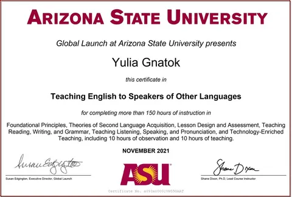
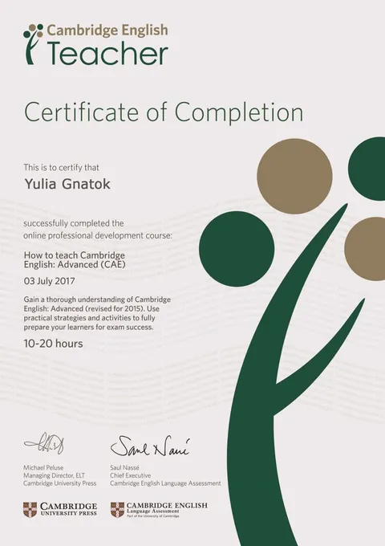
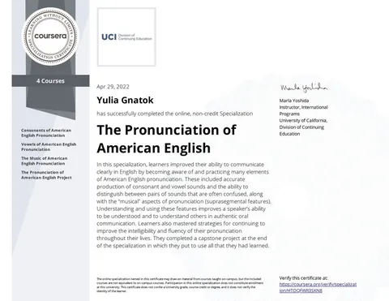
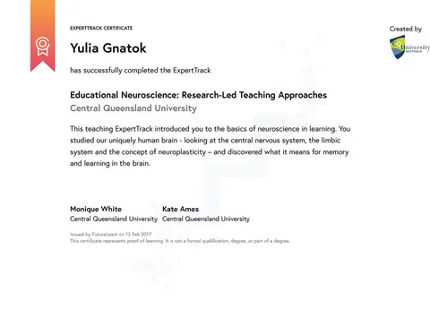
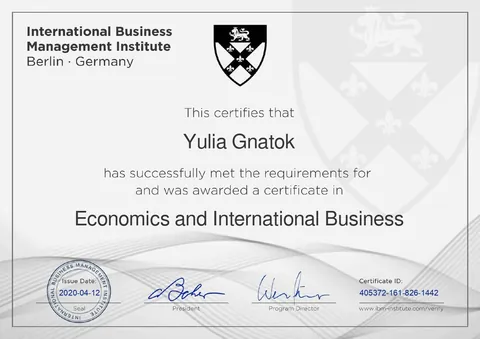
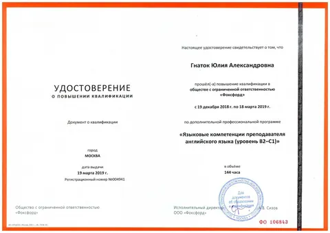
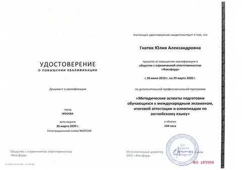
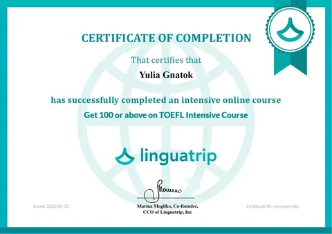
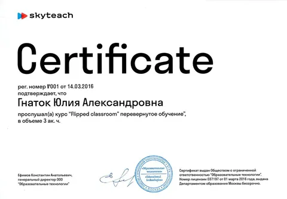
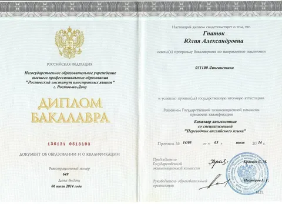

Been hired by international companies — and kept moving up.
Relocated abroad and settled in, with no language barrier in the way.
Reached the level they were aiming for.










All certificates were issued under my maiden name, Yulia Gnatok.
One-to-one online lessons.
Choose whatever's easiest — I'll get back to you quickly.